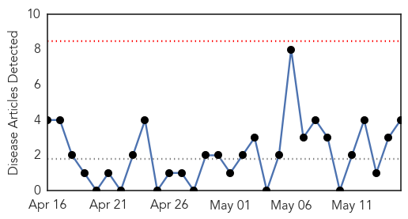
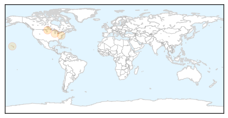
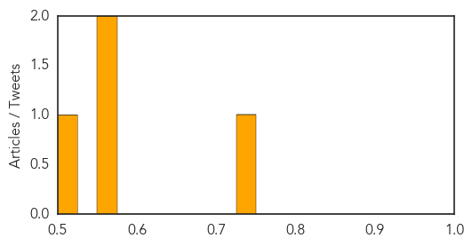
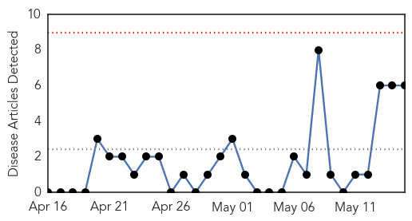
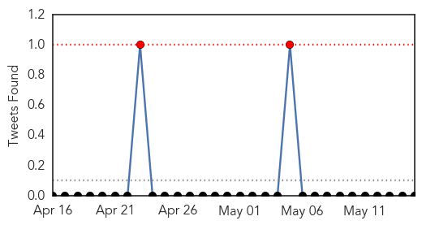
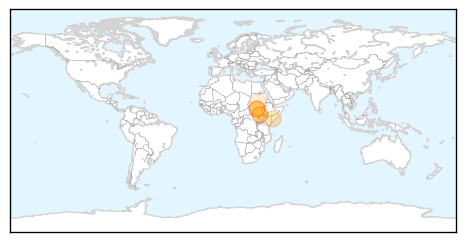
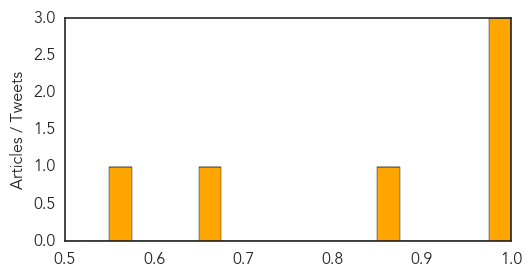

Hepatitis
30-Day Web Trend
0 alerts, 0 warnings

30-Day Twitter Trend
0 alerts, 0 warnings

Article Locations
Article Confidences
Top Articles:
Top Tweets:
-
No tweets found for May 15, 2014
Cholera
30-Day Web Trend
0 alerts, 0 warnings

30-Day Twitter Trend
1 alerts, 0 warnings

Article Locations
Article Confidences
Top Articles:
- 1.000
- Press Release on Cholera Outbreak in Juba, South Sudan - South Sudan
- 0.995
- 1 killed, 18 infected with cholera in Juba
- 0.994
- One dead from cholera in war-torn South Sudan: health minister - South Sudan
- 0.864
- SOMALIA: Cholera outbreak leaves three children died in Buale, Middle Jubba
- 0.665
- One dead from cholera in war-torn South Sudan: health minister
- 0.557
- South Sudan: 30,000 South Sudanese women at risk of dying in childbirth,warns UNFPA
Top Tweets:
-
No tweets found for May 15, 2014